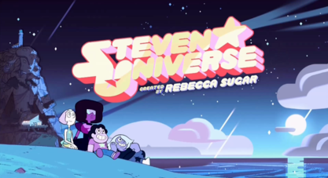
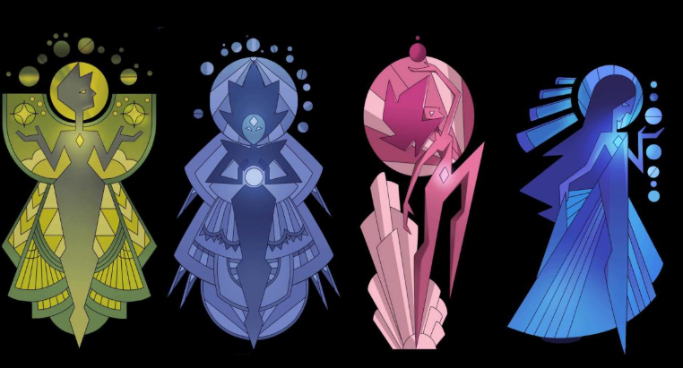
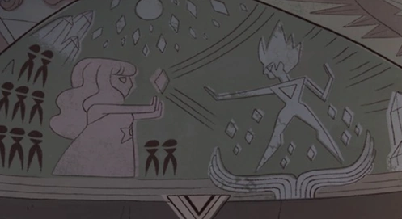
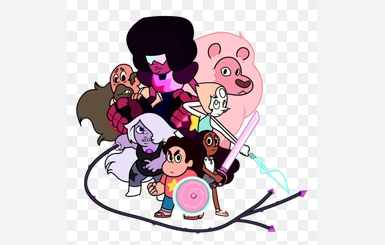

Steven Universe is about a boy who is half human, half gem. Gem's are basically like aliens in this universe, their home-planet is called "Home World". The gems are a little bit of bad guys. The Diamonds (Pink, Yellow, Blue and White), they go around, finding planets to colonize to make more gems.
One day, Pink Diamond wanted a colony of her own. The other diamonds didn't want to give her a planet, but eventually, they gave in and assigned her to the planet Earth.
There on that planet, she discovered so many things. So many wonders and possibilities. But she was slowly destroying the planet with her colony. She fought to save the planet as a different gem, a rose quartz. She formed an army called "The Crystal Gems". These gems that fought with her were gems that were outcasted and wronged by The Diamonds. She won the war!
Rose (previously Pink Diamond) found true love with a human on Earth. They had a few troubles but they still stayed together. They eventually had a kid, but in order for the kid to exist, Rose had to give up her form as a Rose Quartz and almost be fully erased from the world.
When Steven was born, the only thing he had from his mother was her gem. It was located on his stomach. Together, with Steven's dad and a few of Rose's friend that fought in the war with her, Steven was raised as a Crystal Gem. Throughout the series, Steven goes through challenges and battles in both gem and human scenerios.
